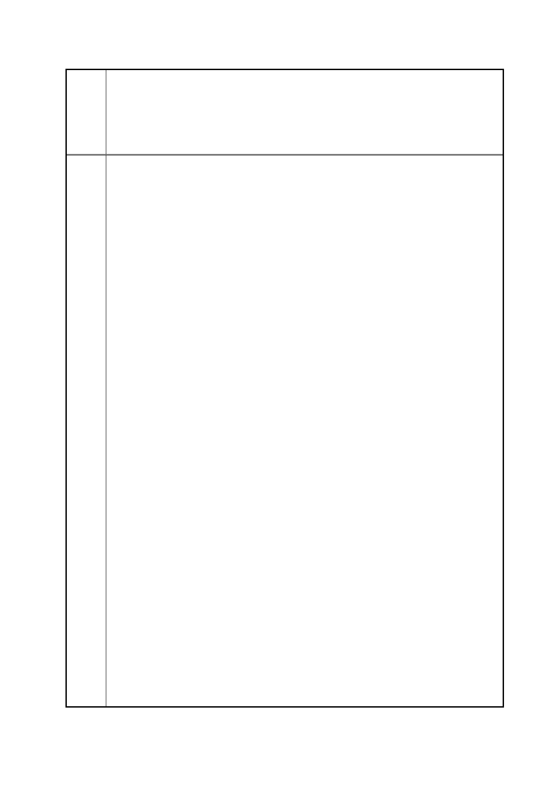

臺北市都市計畫委員會 公民或團體陳情意見綜理表
「變更臺北市信義區逸仙段二小段 33 地號等 21 筆土地（原臺北機廠）
案
名
工業區為創意文化專用區、特定專用區、道路及綠地用地主要計畫案」
及「擬定臺北市信義區逸仙段二小段 33 地號等 21 筆土地（原臺北機
廠）創意文化專用區、特定專用區、道路及綠地用地細部計畫暨劃定
都市更新地區計畫案」
款所提的主要上下水道系統，都沒有做，建議這個計畫先暫停，
讓民眾做更多的討論。
3. 我報告一下國外的的鐵道博物館怎麼經營，大阪的交通博物館梅
小路、京都的梅小路蒸汽機車館，由同一個文化資產單位經營，
這個經營單位一年費用是 3 億日元，營收 3 億日元，其中票箱收
入 2 億多，其他販賣餐點、商品賣 1 億日元，每年還有盈餘 500
萬日元分給員工。臺鐵現在手上有這麼好的地可以做好的規劃，
臺灣現在有那麼多需要保存的公車、飛機等著要保存，這麼大一
塊地可以做城市交通博物館，在全世界，城市中心的交通博物
館，只要臺鐵肯好好經營，絕對是一個會賺錢的營利事業。
4. 建議臺鐵局不要以為把地讓給美術館就一定會賺錢，明年文化局
在美術館的館務上面，一年要花費 3.5 億臺幣的預算，但北美館
一年營收只有 700 萬元。臺鐵局如果希望臺北機廠生生不息、永
續經營，不應該讓給每年有這麼多開銷的單位。
5. 這個計畫有這麼大的爭議存在，建議程序中止，讓公民做更多的
討論。
臺鐵局高主任秘書
1. 臺北機廠的委託規劃案是依照採購法的規定公開招商，於 99 年 6
月簽約，經費約 700 多萬，目前尚未結案。從 99 年 6 月迄今，
本案從文化資產的審議，到現在已經 2 年多，保存的區域都是經
過文化資產審議結果，才劃定都市計畫，所有程序都是公開程序。
2. 文化資產是全區審議，包括 4 棟古蹟、3 棟歷史建築物，還有附
帶保留地警、老樹、日式庭園、主要軌道等，都要保留下來，本
案都市計畫是依據文化資產審議的結果來訂定，在文資審查期
間，臺鐵局亦參考許多國外的工業遺址的保存案例去作規劃。
市民十二
1. 黑白的說明會資料看不清楚，建議改善。
2. 本計畫只有政府單位內部協商，卻沒有和當地居民好好討論。臺
鐵局花費 700 萬委託出這樣的規劃成果，相較於高雄鐵道故事館
只有 100 萬的補助經費，這樣對嗎？
3. 未來臺北機廠的生態會如何處理？珍貴的植物是會搬走或原地
保留？
第 130 頁/共 154 頁